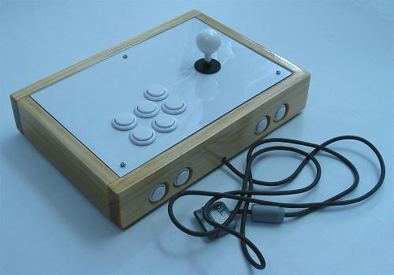
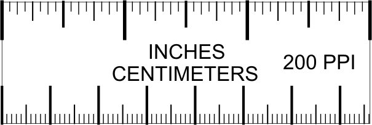

Introduction
This document serves multiple purposes: It expresses the advantages of using a joystick over a control pad, it reviews some brand-built arcade controllers, it educates on many essentials in putting a quality custom controller together, it argues why certain designs and parts are best in making a controller, it gives ideas for putting together various types of joystick controllers, it shows you how to put some specific controllers together, and it tries to draw more attention to the underrated joystick.

The motivating reason for getting a joystick controller is to improve your performance. Do not simply purchase some joystick, having little or no previous knowledge, assuming you will be satisfied with it. I made this mistake and felt obligated to create this document to stop others from repeating the same. This document provides a lot of arcade joystick knowledge and can save a great deal of time, thought, research, and money in obtaining the proper controller. You will decide how to buy and/or make your own controller, but this document will provide arguments for why certain choices should be made.
Are joysticks, buttons, and layouts common to certain regions better than others to other regions? Different regions of the world tend to use differently made devices and designs. The strength of springs, the shape and texture of handles, the shape of restrictors and actuators, the precision of parts, the placement of joysticks and buttons, differs from some regions to others. It stands to reason that some regions will have better combinations of attributes than others.
When you familiarize yourself with a quality joystick, you will realize the inferiority of the control pad. And when you familiarize yourself with quality parts and designs, you will realize the discrepancies in quality. Part of the reason certain geographic areas of the world (like Japan) are better at certain games than other geographic areas (like America) is the difference in parts and design accustomed to their region. Poor standards do not nurture good quality. If your controller is mediocre, your performance will also be mediocre.
Look around and find the parts and designs that work best for you. This way you can find your ideal controller.
Measurement Conversions
If you are not used to both millimeter and inch measurements, get a conversion number in mind and maybe a ruler displaying both. Get the number 25.4 in your head so you can multiply by it or divide by it for conversions. There are exactly 25.4 millimeters in the internationally regarded inch.

1 inch (in/”) = 2.54 Centimeters (cm) = 25.4 Millimeters (mm)
10 Millimeters (mm) = 1 Centimeter (cm) = ~0.39 inches (in/”)
Number of Inches * 25.4 = Number of Millimeters
Number of Millimeters / 25.4 = Number of Inches
Disclaimer
This document is compiled according to my best knowledge. There is an enormous and diverse collection of information in this site. Some errors may be present and some information may be partially or outright wrong or incomplete. As well, some of the content is based on my opinions. Use this document and its suggestions and experiment at your own discretion and risk.
Joystick controller components are generally not very dangerous, but power tools and chemicals definitely can be. Use practical caution. Protect your body, especially your eyes, ears, hands, and lungs. Follow the instructions provided for your tools, parts, and other materials.
There are inherent risks in modifying hardware; events of adverse effects on your hardware are not my responsibility.